San Francisco to Big Sur · April 15-21, 2026
I'm doing the California Walk again. A week in California: San Francisco down to Big Sur, mostly on foot, with good conversations and good company. Nature at a slow pace. Dinners together in the evening.
It has elements of a retreat, or a program, or a reset. But it's really just personal. It's a walk through some of the most beautiful land in California, with whoever wants to come. I'm inviting people by phone. If nobody comes, I'm still going.
Come for a day, come for the week.
In April 2025, I walked from San Francisco to Big Sur. It was mostly two of us, but at different points we were three or four. Small numbers, but the right ones.
Going in, we were trying for something like endurance and inspiration: a different hike every day, a new town every night. What we actually found was the base camp model. We got a place in Santa Cruz and kept coming back to it. Three nights there, two in Big Sur. Less logistics, more presence. It was better than the original plan.
The central story was a river crossing at Henry Cowell Redwoods State Park. We came to a stream blocking the path, with the trail continuing on the other side. It felt both inevitable and dangerous.
"We took off our boots and shoes and hung them across our necks. Waded across."
-- JC"As soon as we got to the river, a voice inside me said, we need to cross the river. And I also knew that you weren't there yet, but you would get there."
-- VipulThere was a baptism in the Big Sur river. An Easter Sunday history tour in Monterey with a writer named Stuart Thornton. Good tacos. Banana slugs on the forest floor. A beautiful, empty hike through Garland Ranch in Carmel.
"It made me think about the other things that I wanted to do in my life, and realize that I should just try to do them with the same sense of initiative and adventure."
-- JCIt was a little shaggy. The response could have used more planning. But I'm proud of it.
"I'm still trying to figure out what it was."
Sutro Heights, Golden Gate Park, the Embarcadero. The city on foot: bridges, ocean, and the feeling of starting something before you leave it all behind.
Beach town, redwood forest, home base. Henry Cowell Redwoods, river crossings, banana slugs on the forest floor. Three nights here: you walk all day, then come back to the same place.
The bay trail along quiet beaches, maritime history from a local writer, good tacos. The stretch of coast where California starts to get dramatic.
Garland Ranch Regional Park. A beautiful, empty hike up into the highlands with views that make you stop talking for a minute.
Molera trail, Pine Ridge, the river. Two nights at Fernwood with a cabin kitchen and a meadow. Where the walk ends and something else begins.
Same route. Base camp model again: three nights in a Santa Cruz Airbnb, two nights at Fernwood in Big Sur.
| Day | Date | What | Where We Sleep |
|---|---|---|---|
| Wed | Apr 15 | Arrive SF | San Francisco |
| Thu | Apr 16 | Optional SF hike | Santa Cruz Airbnb |
| Fri | Apr 17 | Henry Cowell Redwoods | Santa Cruz Airbnb |
| Sat | Apr 18 | Monterey hike | Santa Cruz Airbnb |
| Sun | Apr 19 | Carmel Highlands | Fernwood, Big Sur |
| Mon | Apr 20 | Big Sur | Fernwood, Big Sur |
| Tue | Apr 21 | Depart | -- |
Come for a day, come for the week. The base camp model means you can join for any leg without needing to commit to the whole thing.
You're invited. That's what this page is: a personal invitation.
If you're interested, call or text. You probably already have my number. If you don't, send me an email. No form, no list. Just a conversation.